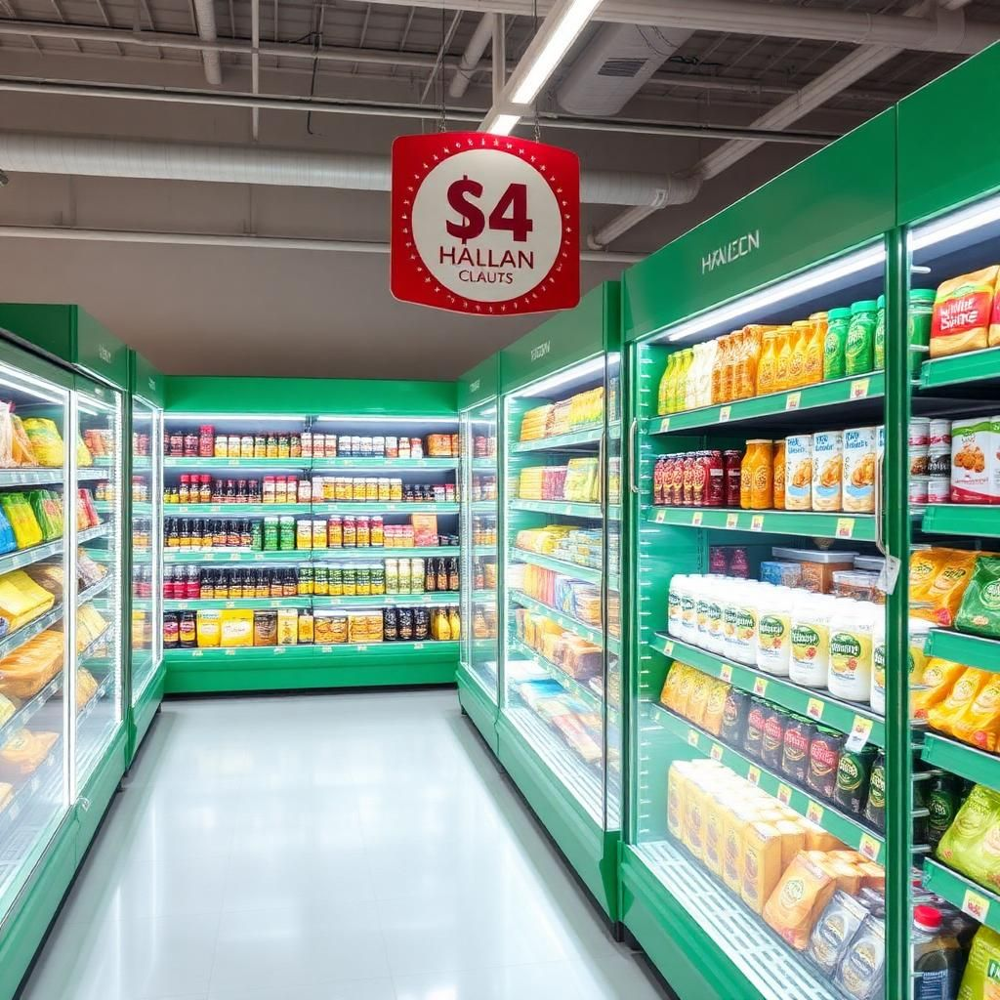

Välkommen till Islam i Sverige
Sverige är hem för över 600 000 muslimer som utgör en viktig del av det svenska samhället. Denna guide hjälper dig att navigera det muslimska livet i Sverige, från att hitta närmaste moské till att förstå islamisk kultur och traditioner.
Utforska Moskéer Se BönetiderMoskéer i Sverige
Stockholm
Stockholms Islamiska Centrum
Adress: Kapellgränd 10, 116 25 Stockholm
Tel: 08-658 95 45
Fredagsbön: 13:00
Göteborg
Göteborgs Islamiska Centrum
Adress: Bergsjöns Islamiska Förening
Tel: 031-123 45 67
Fredagsbön: 13:15
Malmö
Malmö Islamiska Centrum
Adress: Industrigatan 21, 213 77 Malmö
Tel: 040-123 45 67
Fredagsbön: 13:30
Hitta din närmaste moské
Sverige har över 100 moskéer och islamiska center spridda över hela landet. Använd vår interaktiva karta för att hitta den närmaste moskén i ditt område.
Bönetider (Salah)
Bönetiderna varierar beroende på årstid och geografisk plats i Sverige. Här är dagens bönetider för Stockholm:
| Bön | Tid | Beskrivning |
|---|---|---|
| Fajr | 04:30 | Gryningsbön |
| Dhuhr | 12:45 | Middagsbön |
| Asr | 16:20 | Eftermiddagsbön |
| Maghrib | 19:15 | Solnedgångsbön |
| Isha | 21:30 | Nattbön |
Viktigt: Under sommarmånaderna i norra Sverige kan nätterna vara mycket korta eller obefintliga. Konsultera din lokala imam för vägledning om bönetider under dessa perioder.
Halal Mat i Sverige
Sverige erbjuder ett växande utbud av halal-certifierad mat och produkter. Här är din guide till halal-shopping:
Halal-slakterier och Butiker
- Al-Salam Slakteri - Stockholm, Göteborg, Malmö
- Medina Halal Market - Rinkeby, Stockholm
- Istanbul Market - Rosengård, Malmö
- Babylon Halal - Angered, Göteborg
Restauranger
- Habibi Restaurant - Södermalm, Stockholm
- Al-Mounia - Centrum, Göteborg
- Babylon Grill - Malmö Centrum
- Istanbul Kebab - Flera platser i Sverige
Halal-certifiering i Sverige
Sök efter dessa certifieringsmärken:
- Svenska Halal-certifieringsorganisationen
- Islamic Society in Sweden
- Europeiska Halal-certifieringen
Muslimska Samhället i Sverige
Islamiska Organisationer
Sveriges Muslimska Råd (SMR)
Paraplyorganisation för muslimska föreningar i Sverige. Arbetar med dialog mellan muslimer och det svenska samhället.
Islamic Society in Sweden
En av Sveriges äldsta muslimska organisationer, grundad 1962. Fokuserar på utbildning och samhällsintegration.
Svenska Islamiska Akademien
Utbildningsinstitution som erbjuder islamiska studier och forskning på svenska.
Viktiga Islamiska Högtider i Sverige
- Eid al-Fitr - Firar slutet av Ramadan
- Eid al-Adha - Offerfesten
- Mawlid al-Nabi - Profetens födelsedag
- Laylat al-Qadr - Maktens natt under Ramadan
Många svenska kommuner erkänner dessa högtider och tillåter ledighet för muslimska anställda.
Islamisk Utbildning
Islamiska Skolor
Sverige har över 50 islamiska friskolor som kombinerar svensk läroplan med islamisk utbildning:
- Al-Azhar Skolan - Stockholm
- Islamiska Skolan i Göteborg - Göteborg
- Malmö Islamiska Skola - Malmö
- Växjö Islamiska Skola - Växjö
Koranskolor och Vuxenutbildning
Koranskolor för Barn
Finns vid de flesta moskéer. Undervisar i Koranläsning, arabiska och islamiska värderingar.
Islamiska Studier för Vuxna
Kurser i islamisk teologi, arabiska språket och islamisk historia erbjuds vid flera center.
Imam-utbildning
Specialiserade program för de som vill bli imamer eller islamiska lärare i Sverige.